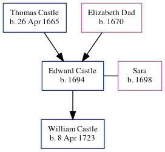

Edward Castle 1694 -
[ Home ] | [ Calendar ] | [ Surnames Index ] | [ Errors ] | [ Family History ]The child of Thomas Castle and Elizabeth Dad, Edward Castle, the 6 times great-grandfather of Nigel Horne, was born in 16941, was baptised in St. Marys, Capel Le Ferne, Kent, England on 24 Jun 1694 and had 1 child with Sara: William.
Parents
- Thomas was born on 26 Apr 1665
- Elizabeth was born in 1670
Children
- William was born on 8 Apr 1723
Citations
- Public Member Trees Online publication - Provo, UT, USA: The Generations Network, Inc., 2006.Original data - Family trees submitted by Ancestry members.Original data: Family trees submitted by Ancestry members.
Family Tree
Map
Generated by ged2site. Last updated on Jul 3, 2024
Known Issues
Date of baptism (24 Jun 1694) before date of birth (1694)
Date of birth is known, but not place